Launching soon. StreamSnag 1.6 is not released yet, and Pro is not on sale yet.Launching soon. 1.6 is not released. Pro is not on sale.
StreamSnagStudy tools
From a lecture to a study pack.
One lecture, step by step: its transcript, a reading edition, a study page with the slides in step, a study pack with its one-page cheat sheet, and a few cards a day. Then a mock exam across the course, and the library for every lecture you have.
- The video lecture
- Transcript
- Reading edition
- Study page
- Study pack
- Cards due today
What is free, what is Pro, and whose AI
Free
Saving the lecture, and saving the captions it already has as a transcript. No account, no limits.
Pro
Everything else on this page: transcribing, the reading edition, the study page, the study pack with its cheat sheet, the Deep pack, review, the mock exam, and studying videos you already had. Your first lecture is free, then US$39.97 a year.
Your own AI
Only the study pack and the mock exam use AI, and they run on your own AI account. On a Claude or ChatGPT subscription you already have, nothing extra. With a pay-as-you-go key it is billed by your provider, never by StreamSnag.
One lecture, from start to finish.
Every picture below is StreamSnag itself, on one invented lecture: a 23-minute first-year law class with nine slides. Only the worked example and the diagram come from another, our invented lecture on cardiac output.
LAW101, lecture 4: Offer and acceptance. Open its samples
-
Free from captionsPro without them
The transcript.
Every word, with the minute it was said, saved next to the video. From the lecture's own captions it is free; with none, Pro transcribes it on your computer, with no minute limits.
-
ProNo AI
The reading edition.
The lecture set out to read: headings, a contents list, a minute beside every paragraph, spoken lists set out as lists and the lecturer's signposts marked. No word is changed. 23 minutes became a 12-minute read.
Marked as the lecturer's emphasis
11:11Lecturer: And this will be on the exam, I am telling you now. Every year a problem question has an advertisement in it, and every year some people write, adverts are invitations to treat, end of story.
-
ProNo AI
The study page, with the slides in step.
The video, the slides and the transcript side by side, following along as it plays. Each slide gets its minute, and one it is unsure of is marked as approximate.


-
ProYour AI
One sheet before anything is sent.
It says what the pack will make, what is sent, to which AI account, and roughly what it costs. A pack style sets it all in one click: “Full pack”, “Quick review”, “Deep pack”, or one you saved yourself.
![The study desk's sheet Before the AI reads this lecture, for Offer and acceptance. Makes: the pack styles Full pack, Quick review, Deep pack, chosen, and Before the exam, a style saved by the user; Study guide, Deeper review sheets, Practice quiz and self-test, Flashcards, Explanations beyond the lecture, Key figures from the slides, Cleaned transcript, Reading edition; about 19 flashcards, about 15 practice questions, up to 2 worked examples and 2 diagrams for this lecture. Sends the lecture's transcript and the text and speaker notes of its slides, to DeepSeek, your API key. AI use: in all about 30 requests, roughly 9 to 20 US cents at today's prices. Cost: charged to your DeepSeek account. Buttons Not now and Make the study pack.](../img/shots/pack-sheet-1x.webp)
![The study desk's sheet Before the AI reads this lecture, for Offer and acceptance. Makes: the pack styles Full pack, Quick review, Deep pack, chosen, and Before the exam, a style saved by the user; Study guide, Deeper review sheets, Practice quiz and self-test, Flashcards, Explanations beyond the lecture, Key figures from the slides, Cleaned transcript, Reading edition; about 19 flashcards, about 15 practice questions, up to 2 worked examples and 2 diagrams for this lecture. Sends the lecture's transcript and the text and speaker notes of its slides, to DeepSeek, your API key. AI use: in all about 30 requests, roughly 9 to 20 US cents at today's prices. Cost: charged to your DeepSeek account. Buttons Not now and Make the study pack.](../img/shots/pack-sheet-dark-1x.webp)
-
Pro
Pack styles.
Keep the choices you make often under a name. A style can be the default for a whole course, and the one last used on a lecture is offered first next time.
Makes
Full packQuick reviewDeep packBefore the exam- Study guide
- Deeper review sheets
- Practice quiz and self-test
- Flashcards
- Explanations beyond the lecture
- Key figures from the slides
- Cleaned transcript
- Reading edition
About 14 flashcards and about 8 practice questions for this lecture.
“Before the exam” is a style saved with “Save as a style…”: everything, with 36 flashcards an hour. -
ProWritten by your AI
The study guide.
Key ideas in plain words, each with its minute, its slide and the lecturer's own words; review sheets, easily confused pairs and a glossary. It is checked against the transcript and can still be wrong, so every point leads back to the recording.
-
ProNo AI request of its own
A cheat sheet on one page.
Every study pack comes with one: a landscape page of A4 or Letter in six parts, Concept, Definition, Formula, Compare, Pitfall and Memory. Each line is the guide's own, only shortened, never reworded, and links to its minute. The “Beyond the lecture” additions are left out.
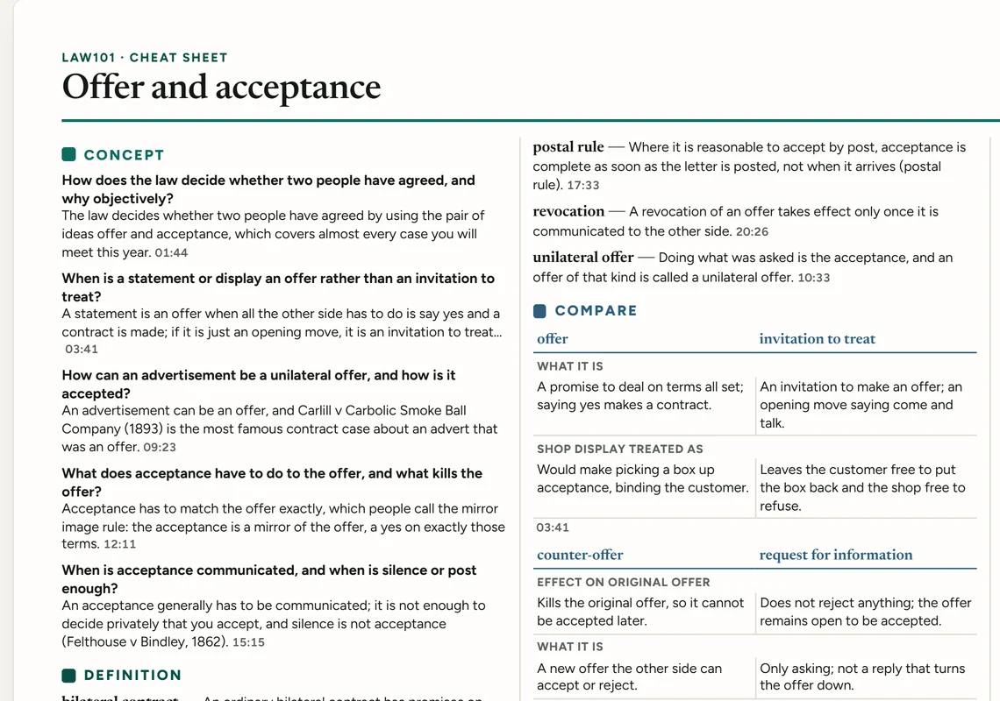
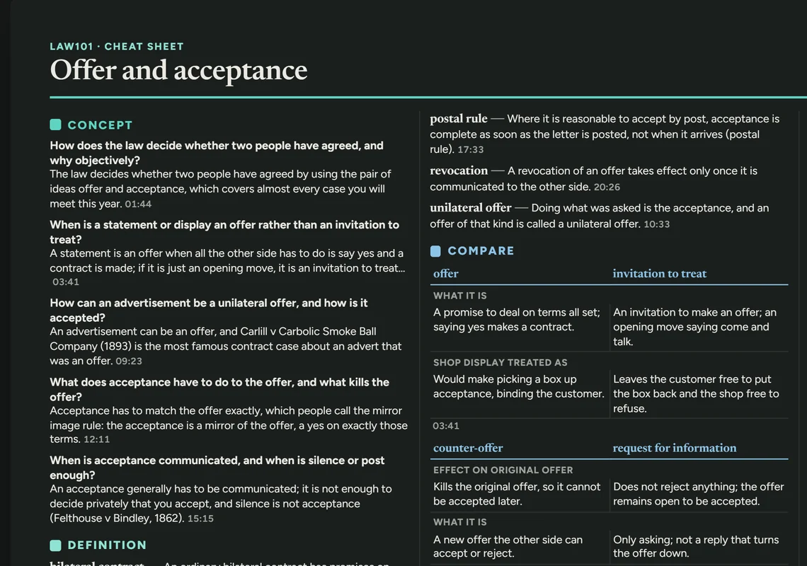
-
ProWritten by your AI
Worked examples, in the Deep pack.
The Deep pack is a pack style for when you have AI use to spare: more flashcards and practice questions, and worked examples wherever the lecture has a method or a calculation. Every step is checked against the lecture and points to its minute.
This one is from a Deep pack of our invented cardiac lecture, the one the cardiac sample study guide is made from. That pack was 28 requests; its Full pack, 22.
![A worked example in the guide: Cardiac output and ejection fraction in a failing ventricle. A patient has a heart rate of 100 beats per minute, an end-diastolic volume of 150 mL and an end-systolic volume of 100 mL; work out the stroke volume, cardiac output and ejection fraction, and judge the heart. Four numbered steps, each with its minute and slide: stroke volume 150 minus 100 gives 50 mL, 02:53, slide 2; cardiac output 100 times 50 mL gives 5 litres per minute, which looks completely normal, 01:32, slide 2; ejection fraction 50 over 150 gives 33 percent, 03:16, slide 2; normal is above about 55 percent and below about 40 is reduced, 03:27, slide 2. The result: a normal resting cardiac output does not mean a normal heart.](../img/shots/worked-cardiac-1x.webp)
![A worked example in the guide: Cardiac output and ejection fraction in a failing ventricle. A patient has a heart rate of 100 beats per minute, an end-diastolic volume of 150 mL and an end-systolic volume of 100 mL; work out the stroke volume, cardiac output and ejection fraction, and judge the heart. Four numbered steps, each with its minute and slide: stroke volume 150 minus 100 gives 50 mL, 02:53, slide 2; cardiac output 100 times 50 mL gives 5 litres per minute, which looks completely normal, 01:32, slide 2; ejection fraction 50 over 150 gives 33 percent, 03:16, slide 2; normal is above about 55 percent and below about 40 is reduced, 03:27, slide 2. The result: a normal resting cardiac output does not mean a normal heart.](../img/shots/worked-cardiac-dark-1x.webp)
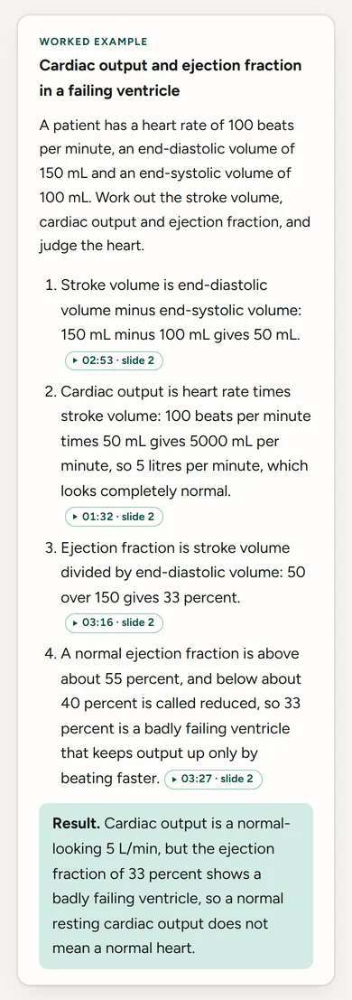
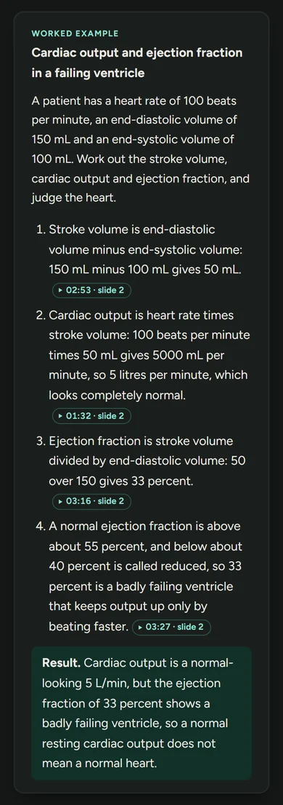
-
ProDrawn by StreamSnag
Diagrams, drawn from the lecture's facts.
In a Deep pack your AI may describe a concept map, a sequence or a comparison as data, and StreamSnag draws it on your computer, with “The diagram in words” underneath, each line with its minute. Every word of every label has to come from the lecture's facts or the diagram is left out, and a pack with no diagram is a fine result.
This sequence is from the same cardiac Deep pack.
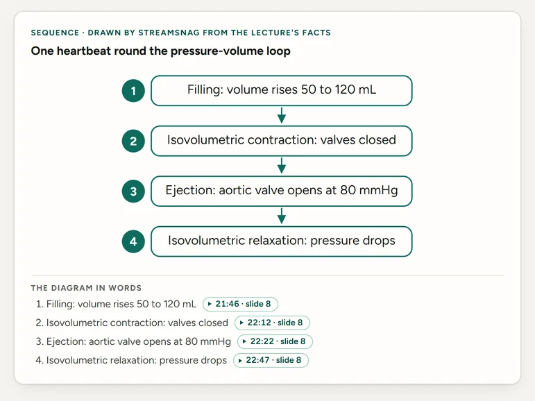
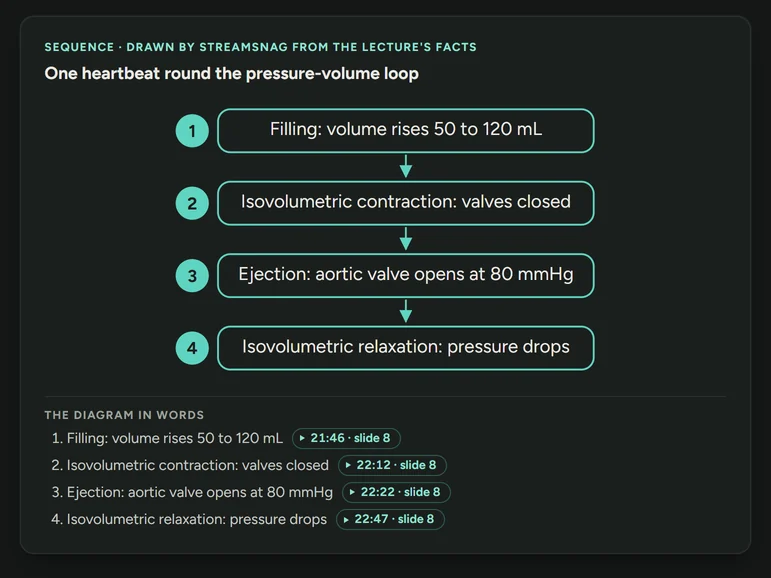
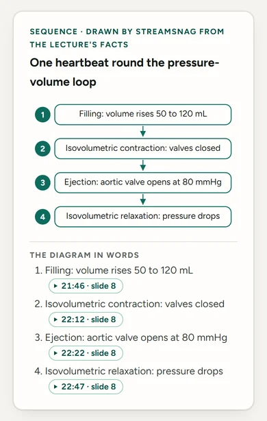
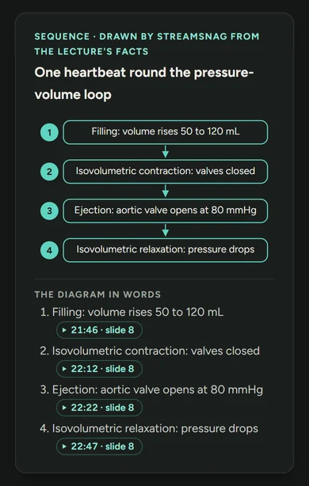
-
ProWritten by your AI
The quiz.
New cases to try the lecture's ideas on, with Show answer for why each option is right or wrong, and a self-test to answer from memory.


-
ProNo AI to review
Flashcards, a few a day.
The pack's flashcards wait in the study desk's Review. Each shows the lecturer's words and opens the lecture at its minute, and comes back on its own day. Prefer Anki? Each pack also saves a file for it.
Then a mock exam across the course.
When two or more lectures of a course have study packs, their shelf on the study desk offers “Make a mock exam”: 20, 30 or 40 questions, multiple choice, short answer or both, some joining two lectures. Your AI writes it from the facts the packs already took. No lecture is read again.
-
ProYour AI
One sheet before it is written.
It says what the exam will be, what is sent and to which AI account: only the facts from the packs, each with the lecturer's words, no transcript and no slides. It gives the requests and roughly the cost, and says that for exams a stronger model gets more answers right than a small one.
![The study desk's sheet Before the AI writes this exam. Makes: a mock exam of 30 questions across 2 lectures, multiple choice and short answer, some joining two lectures, each with its explained answer and the lecture and minute it comes from, from Consideration and Offer and acceptance. Sends the facts already taken from these lectures' study packs, 64 short statements, each with the lecturer's words, to DeepSeek, your API key; no transcript is sent again, and no slides. For exams, a stronger model gets more answers right than a small one. AI use: in all about 9 requests, roughly 3 to 7 US cents. Every question is checked against the facts, and one they do not support is dropped; then each answer gets a second check, and one it disagrees with is marked. Buttons Back, Not now and Make the mock exam.](../img/shots/exam-sheet-1x.webp)
![The study desk's sheet Before the AI writes this exam. Makes: a mock exam of 30 questions across 2 lectures, multiple choice and short answer, some joining two lectures, each with its explained answer and the lecture and minute it comes from, from Consideration and Offer and acceptance. Sends the facts already taken from these lectures' study packs, 64 short statements, each with the lecturer's words, to DeepSeek, your API key; no transcript is sent again, and no slides. For exams, a stronger model gets more answers right than a small one. AI use: in all about 9 requests, roughly 3 to 7 US cents. Every question is checked against the facts, and one they do not support is dropped; then each answer gets a second check, and one it disagrees with is marked. Buttons Back, Not now and Make the mock exam.](../img/shots/exam-sheet-dark-1x.webp)
-
ProNo AI to take it
Take it, then see your score.
The exam is one page saved next to the lectures, and it works offline. Answers stay hidden until Submit: the multiple choice is marked for you, and you mark your short answers against the model answers. Try again starts over. Printed, the answer key follows on a page of its own.
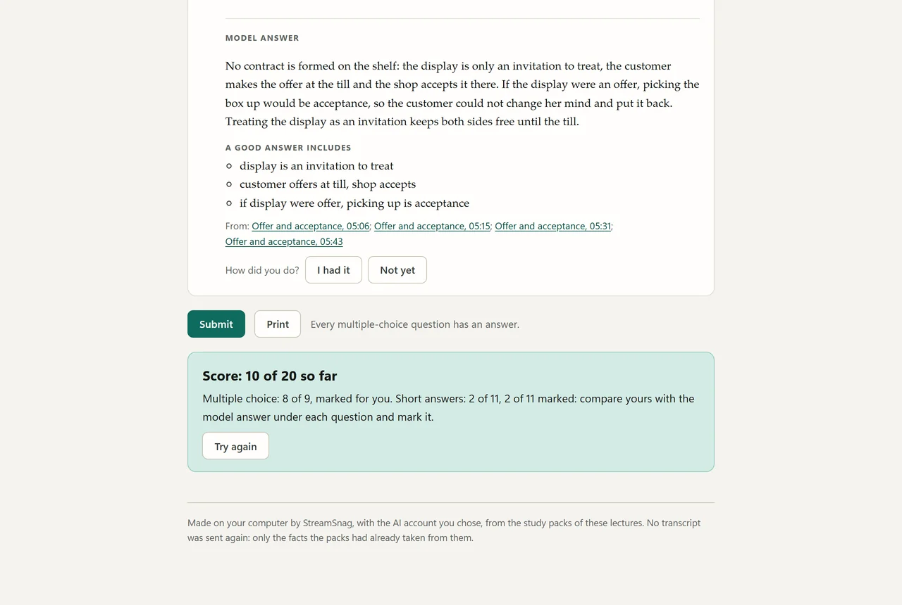
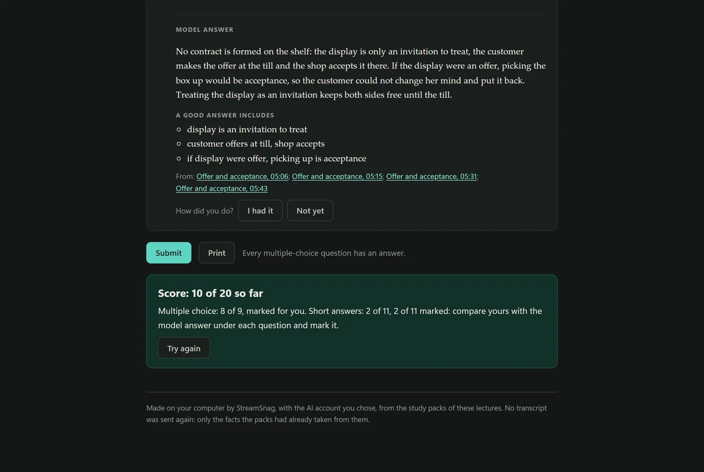
-
ProWritten by your AI
Every answer explained, with its lecture and minute.
Each option says why it is right or wrong, and each answer names the lecture and the minute it comes from, so you can hear it for yourself.
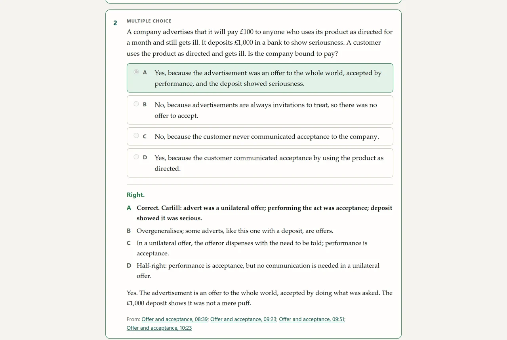
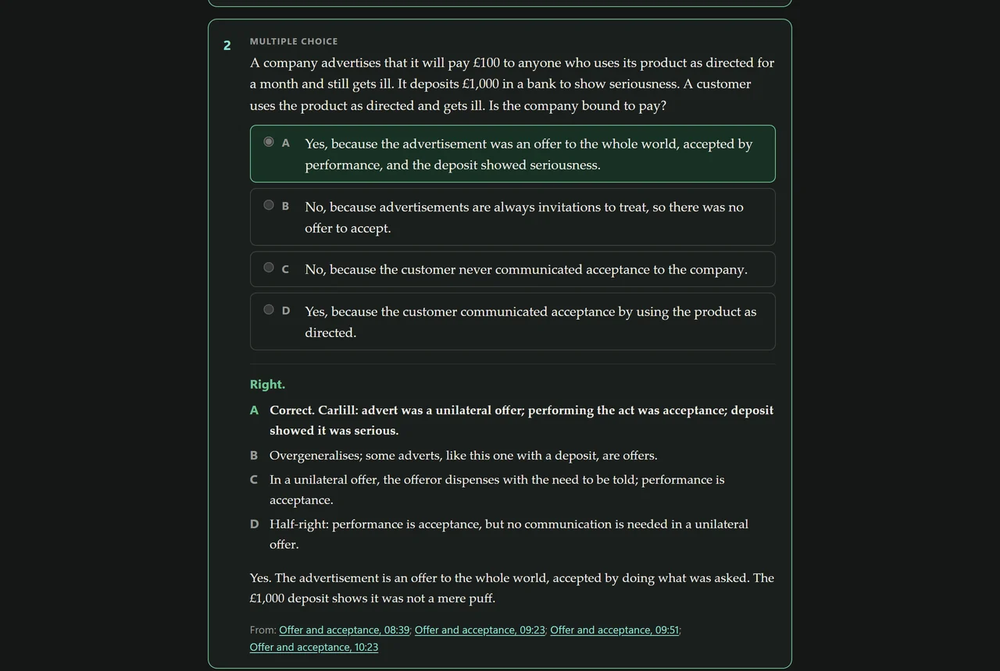
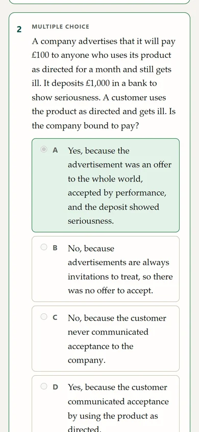
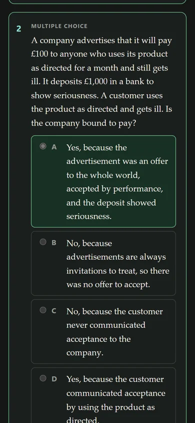
The first check
Every question is checked against the facts of the lectures it comes from, and dropped when they do not support it. A few more are asked for, to make up.
The second check
A second, separate working of every answer: multiple choice without being told which option is marked, short answers against the model answer. An answer it disagrees with is marked under the question, with what it chose and why, never removed silently. It can agree with an answer that is wrong, so it is no guarantee: check the minute.
A 20-question exam from these two lectures was 7 requests to DeepSeek Flash, about US$0.02 at DeepSeek's peak-hours price. AI use is never part of StreamSnag's price.
Then the library, for every lecture you have.
The study desk keeps your lectures on shelves, one per course, with what is due today on top.
-
Pro
Shelves, by course.
What StreamSnag downloaded sits under “Downloaded with StreamSnag”. Videos you already had sit apart, under “Your own files”. A shelf can be renamed on the desk; no file or folder is.
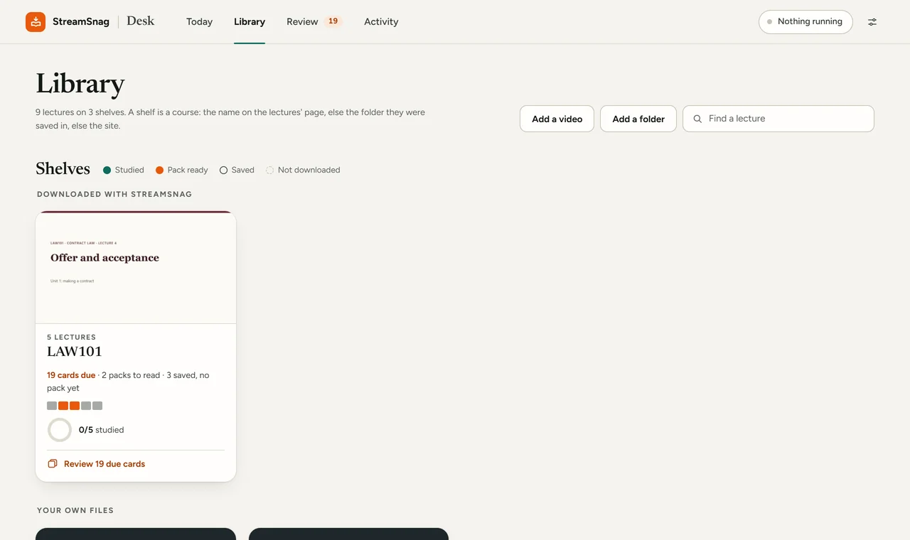
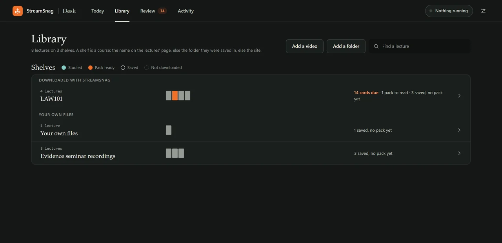
-
Pro
A course, at a glance.
A course opens with its cover, a ring that says how much of it you have studied, and its next step. Each lecture is a row with small marks for what has been made: transcript, reading edition, study page, study pack, cheat sheet.
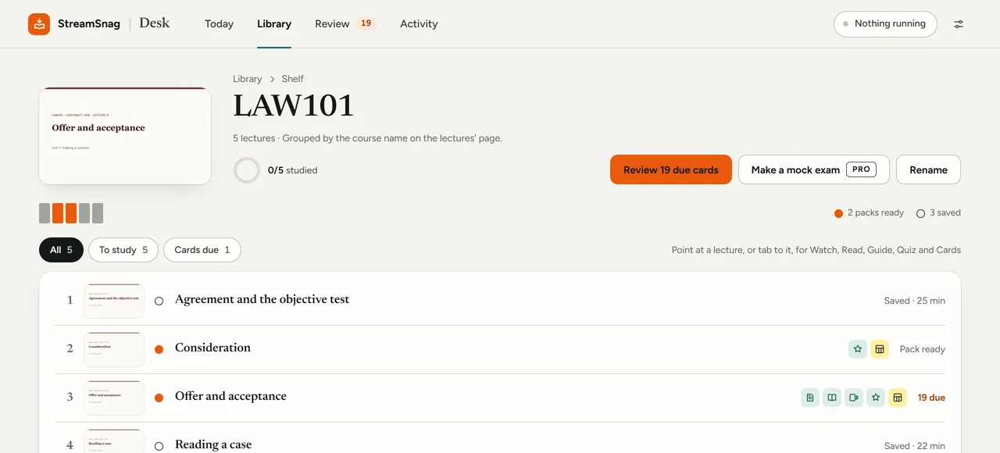
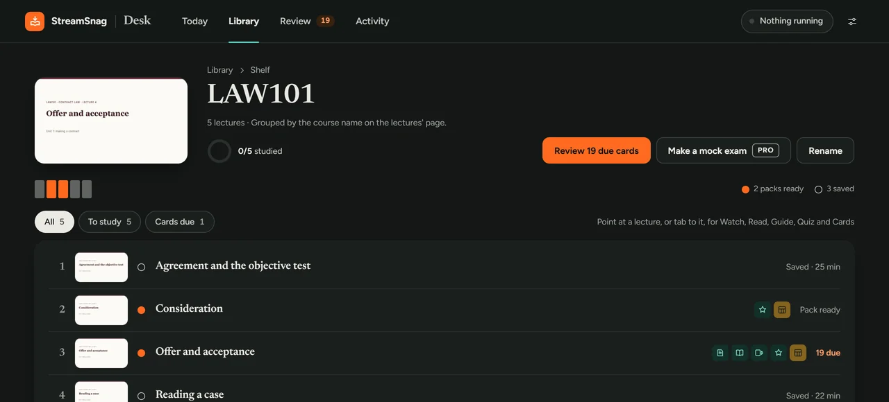
-
Listing is freePro to study them
Add a video, or a folder.
Any video or audio file already on your computer, or a folder of them: each folder becomes a shelf, and new files in it are found each time the desk opens. Nothing is moved, renamed or copied. It needs the free local helper.
![The sheet Add a folder of lectures over the study desk: choose a folder on this computer; its videos become lectures on a shelf of their own, named after the folder. New files in it are found each time the desk opens. Nothing is moved, renamed or copied. Nothing about these files leaves this computer, except what you send to your own AI after the sheet that shows what is sent. Listing them is free; transcribing them and making their study pages, reading editions and packs is part of Pro. A box to include its subfolders, and the buttons Cancel and Choose a folder.](../img/shots/add-folder-1x.webp)
![The sheet Add a folder of lectures over the study desk: choose a folder on this computer; its videos become lectures on a shelf of their own, named after the folder. New files in it are found each time the desk opens. Nothing is moved, renamed or copied. Nothing about these files leaves this computer, except what you send to your own AI after the sheet that shows what is sent. Listing them is free; transcribing them and making their study pages, reading editions and packs is part of Pro. A box to include its subfolders, and the buttons Cancel and Choose a folder.](../img/shots/add-folder-dark-1x.webp)
This lecture's Deep pack was 25 requests to DeepSeek Flash and cost about US$0.05 at DeepSeek's peak-hours price. Pro is US$39.97 a year, US$4.99 a month or US$99.95 once. AI use is never part of StreamSnag's price.
Sample reading edition Sample study page Sample study guide Sample cheat sheet All the samples
Start with tonight's lecture.
Saving is free, and Pro takes your first lecture from start to finish, free, with no card.